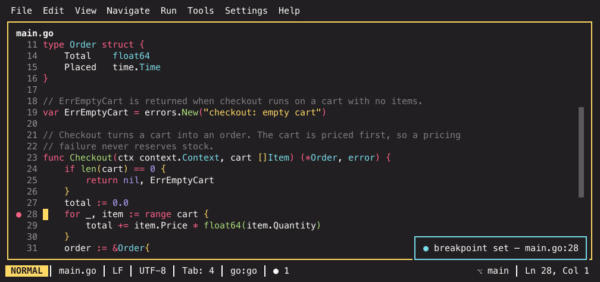

Running and debugging¶
Running¶
Shift+F10 runs the file you are looking at. There is no configuration step first: IKE derives a run configuration from the file's language, saves it as the project's default for that file, and tells you it did. Ctrl+F5 repeats whatever ran last — the way it ran: if the last thing you started was a debug session, the chord starts it under the debugger again. The memory is stored with the project, so the chord still repeats it tomorrow; with nothing run yet it just says so.
Configurations are named, persisted per project in .ike/runconfigs.json, and
carry a command line, a working directory and environment overrides. The
language registry is what knows how to turn "this Go file" into an actual
command.
Edit Run Configuration… (run.editConfig in the palette or the Run menu)
opens a stored configuration's environment variables as an editable list:
A adds a row, Enter edits the selected one (Tab switches between
key and value), D removes it, Ctrl+S saves and Esc throws the
edits away. Empty keys and a key that is already in the list are refused with
the reason, so nothing silently overwrites anything. Saved variables are
handed to the program on every later run.
Run/Debug Configurations… (run.select in the palette or the Run menu)
lists every stored configuration in a picker. Projects that carry a VS Code
.vscode/launch.json see their compatible launch entries (Go, Python, PHP)
merged into the same list, marked with their source — picking one starts a
debug session. Nothing is written back to launch.json, and a stored
configuration wins a name collision. The run.vscode_launch setting turns
the import off.
Where the output goes¶
A run is a terminal command session, not a captured log: real stdin, real exit code, in a terminal pane. Programs that prompt for input work.
Output goes to the Run tool — a pane of its own, like the tool panes you configure yourself. The first run opens it; every later run reuses it, taking over its session (a program still running there is replaced). Terminals you opened are never touched, and nothing but runs ever lands in the Run tool.
run.placement says where it opens:
| Value | Where the Run tool opens |
|---|---|
bottom (default) |
Docked along the bottom edge of the workspace |
left, right, top |
Docked along that edge instead |
in_pane |
As a terminal tab in the focused editor pane |
Assigning run a slot in a tool layout template
(assign = ["Z=run"]) overrides the setting, exactly like for any other tool.
Configs still saying new_terminal keep working — it now means bottom.
"Bottom" means the bottom of your tool area, not the bottom of everything: when your layout already has a tool strip — Problems, Test Results, a tool pane — next to the editor, run output joins that strip instead of stretching a new one across the whole window under the file tree. Only a layout with no tool area at all gets the full-width dock.
Drag the Run pane somewhere else and it stays there. The new spot is
remembered per project — closing the pane and running again, or reopening the
project tomorrow, brings the output back where you put it. Changing
run.placement (or assigning run a slot) takes over again.
The pane stays open when the command exits — the output is the point — and
shows the usual Restart / Close actions: r runs the same command again in
place, ctrl+w closes the pane. The Run tool is not restored on the next
start: a finished program's output is session state, and nothing re-runs behind
your back.
The terminal gets the project's toolchain environment plus the configuration's own overrides, so the interpreter that runs your code is the one IKE shows everywhere else.
Shell scripts¶
.sh, .bash and .zsh files run too, including scratch buffers. The
interpreter is resolved in this order:
- an explicit
[lang.shell] interpreter, - the file's shebang shell, when that binary is actually on
PATH, - the shell the extension implies (
.bash→bash,.zsh→zsh,.sh→sh).
The command is <interpreter> <file> from the project root. IKE never
executes the file directly through its shebang, so your scripts do not need to
be executable and nothing gets chmoded behind your back. A shebang naming a
shell you have not installed falls back to step 3 instead of failing.
Tests¶
Run Test at Cursor and Run Tests in File run tests specifically. Test detection is regex-based per language, deliberately: it works with no language server running and in builds without CGo.
The command is executed directly — no shell parses it — so a test name with spaces or quotes in it needs no escaping.
Debugging¶
Shift+F9 starts a debug session for the current file. One session at a
time. Python debugs through debugpy, Go through delve (dlv dap), PHP
through the built-in Xdebug bridge. Debug Test at Cursor debugs the test
at or nearest above the cursor the same way Run Test at Cursor runs it —
for Go that is delve's test mode, so breakpoints inside the test hit.
| Keys | What it does |
|---|---|
| Ctrl+F8 | Toggle a breakpoint on the cursor line |
| Shift+F9 | Start debugging |
| F9 | Continue |
| F8 | Step over |
| F7 | Step into |
| Shift+F8 | Step out |
| Alt+F8 | Evaluate expression |
| Ctrl+F2 | Stop the session |

Breakpoints can also be set by clicking in the gutter. They are stored per
project in .ike/breakpoints.json and survive restarts — the count in the
status line tells you how many are armed. The screenshot uses the
monokai-pro theme.
y (or Cmd+C) copies the marked row — path:line plus the source
preview and any refinements, a file header its path.
Conditions, hit counts and logpoints¶
The Breakpoints window (Cmd+Shift+F8) edits more than the on/off state:
on a breakpoint row, c sets a condition (the breakpoint only stops when
the expression is true), n a hit count, and l a log message —
which turns the breakpoint into a logpoint: instead of stopping, it logs
the message (with {expression} interpolation) to the debug output every
time the line executes. Logpoints render as ◆ in the list; emptying a field
clears it. All three ride the session live — editing while paused re-arms the
breakpoints immediately.
What an adapter cannot do is stripped rather than mis-sent: PHP's DBGp bridge has no logpoint semantics, so there the breakpoint stops normally; delve and debugpy support all three.
Watches¶
The debug window's variables tree starts with a Watches section: in the
variables column, a adds an expression, e edits one, d removes it.
Every watch re-evaluates on each stop and when you select another frame; a
structured result expands like any variable, and a failing expression shows
its error in place of a value — the other watches, and the session, carry on.
Watches are stored per project in .ike/watches.json, so they survive debug
restarts and IDE restarts. Adding a watch works even while the program
runs; it evaluates at the next stop.
Evaluate an expression¶
Alt+F8 (Evaluate Expression in the palette and the Run menu)
evaluates in the frame you are paused in. Select something in the editor and
it evaluates the selection right away; with nothing selected it asks you for
an expression. The answer opens in a popup at the cursor: Enter expands a
structured value (its fields are fetched on demand), Up/Down or
j/k move, Left folds, Esc closes — and any other key closes it and
does what it normally does. Continuing or stepping closes the popup: the
result describes the frame you just left.
If a debug adapter does not implement evaluation at all, both features say so
once and switch themselves off — the Watches header reads
evaluate unsupported and keeps your expressions listed, so nothing is lost
when you debug the same project with a different adapter.
Inline variable values¶
While the debugger is stopped, lines that mention a local variable show its
current value at the line end, dimmed and italic — the paused file reads like
a live table. The values follow the frame you select in the debug window and
disappear the moment the program resumes. debug.inline_values in
Settings › Debug turns them off.
The debug window¶
It opens on the first stop, without stealing focus from the paused line — you look at your code, not at a panel. One combined area with two views behind a small tab bar: Variables (the resizable frames and variables columns) and Console (the program's output in a real terminal — scrollback, search and selection included). Press Tab to flip between them, click the tab bar, or run Debug: Toggle Console/Variables View from the palette; switching views never loses the console's scrollback or your selection. The area moves and resizes like any pane, and its position is remembered per project.
If the program prints before it ever pauses, the console view comes to the front so the output is visible right away; the first stop brings the variables back (unless you picked a view yourself).
When the session ends the area stays open in a finished state: frames and
variables clear to finished (exit code N), but the output stays readable.
Close it like any pane; the next launch reuses it. Prefer a tidy layout?
Set Settings › Debug › When a session ends (debug.session_end) to
close and the area disappears when the session does.
Adapters install themselves¶
Debugging Python needs debugpy in the interpreter you are debugging with.
IKE checks before it spawns anything and, if it is missing, installs it —
trying pip, then uv pip, then both again with --break-system-packages
for externally managed interpreters like a Homebrew Python. You get a
notification, not a failure.
Go works the same way with delve: a missing dlv is installed via
go install github.com/go-delve/delve/cmd/dlv@latest (Homebrew as the
fallback), and IKE finds it in GOBIN/GOPATH/bin even when that directory
is not on your PATH.
PHP and Xdebug¶
PHP needs no external adapter and no Node: IKE speaks DBGp, Xdebug's own protocol, directly.
Shift+F9 on a PHP file launches it with Xdebug enabled and connects. For debugging a web request rather than a script, run Listen for PHP Debug Connections — IKE waits for Xdebug to call in, so you trigger the request from your browser and the session starts when it hits your breakpoint.
One request is debugged at a time. A page load usually opens several
connections (subrequests, assets), and any that arrive while a request is
paused are let through undebugged — IKE says so instead of ignoring them: the
debug console gets a line per dropped connection with the reason, and a warning
notification for the first of each kind. So if a request never stops at a
breakpoint, the reason is on screen: busy (finish or stop the paused session
first), filter (the hostname filter in Settings › Debug rejected it) or
handshake (something dialed the port without speaking DBGp).
When the drops scroll past faster than you can read them, open the Xdebug
Doctor (Run menu or the command palette). It shows whether the listener is
running, on which port and with which hostname filter and path mappings, plus
a live trace of every connection attempt: accepted ones with their locally
mapped entry file (with a warning when no path mapping resolves it), rejected
ones with the concrete reason and enough identity to fix it — the source
address, the IDE key, the request's entry file and its HTTP_HOST. The trace
works with or without an active debug session and survives closing the panel;
c clears it.
When something does not run¶
"No configuration" — the language has no run template. Running is per-language, and a language that IKE only highlights has nothing to run.
Wrong interpreter — the Toolchain settings page shows which one was resolved, and lets you pin it. Run, debug and the language server all read the same resolution, so fixing it there fixes all three.
The run reuses a terminal you wanted to keep — type something into that terminal; a terminal you have typed into is never taken over.
Related¶
- The integrated terminal — where runs land
- Code intelligence — the same toolchain resolution
- Keybindings reference — the full F-key set